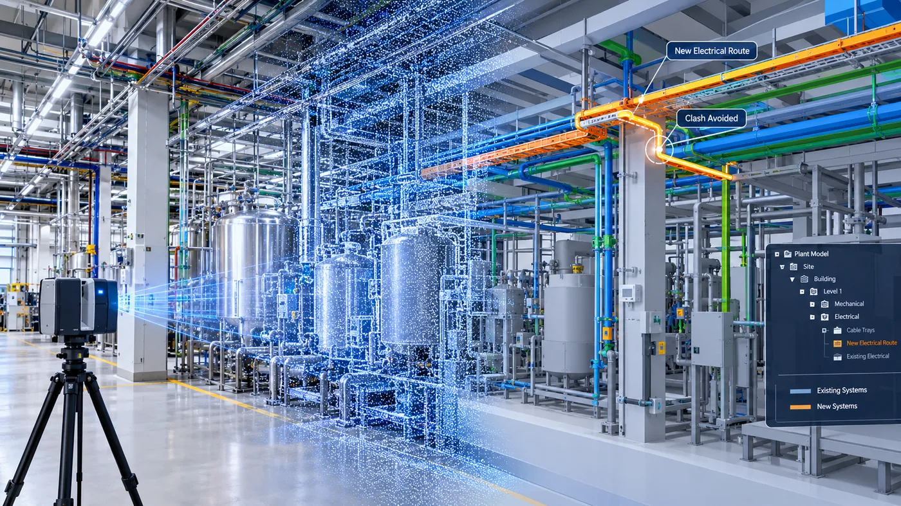

The Assignment
A pharmaceutical manufacturing plant in North Carolina was undergoing an expansion and retrofit to improve plant operations.
The existing electrical and mechanical infrastructure had to be integrated with the plant's new requirements. Accurate information on existing conditions was therefore critical to ensure that newly designed systems could be routed through the facility without clashing with infrastructure already in place.
The requirement was to create an accurate digital representation of the existing plant that engineers and contractors could use for redesign, coordination and planning.
Our Approach
CS TECH Ai used terrestrial laser scanning and Scan-to-BIM workflows to capture the existing manufacturing facility and develop an accurate Revit model.
The engagement included:
- Terrestrial laser scanning of the existing plant
- Creation of a point cloud representing existing conditions
- Conversion of point-cloud data into a Revit model
- Digital representation of existing plant infrastructure
- Integration of the model into engineering design workflows
- Mapping and routing of new electrical systems within existing infrastructure
- Coordination of electrical, plumbing and HVAC requirements
- Virtual testing of proposed system layouts
- Digital coordination of existing and newly designed systems
- Access to accurate measurements and dimensions without repeated site visits
The resulting model provided designers, engineers and contractors with a common digital representation of the existing facility, allowing proposed modifications to be evaluated before installation.
Multi-Disciplinary Coordination
The model supported multiple engineering trades, including:
- Electrical
- Plumbing
- HVAC
Teams could use the existing-condition model to design, plan and test proposed system routes virtually, helping identify potential conflicts before work progressed on site.